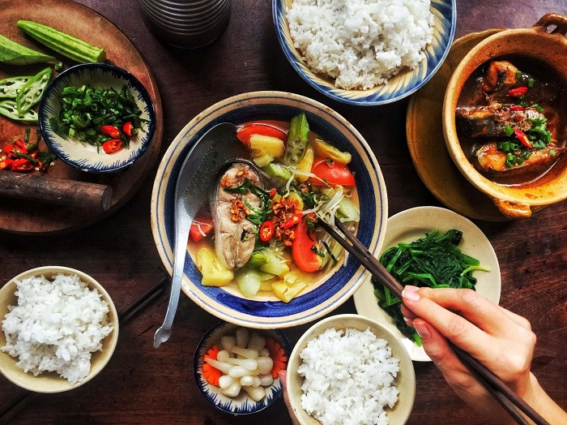
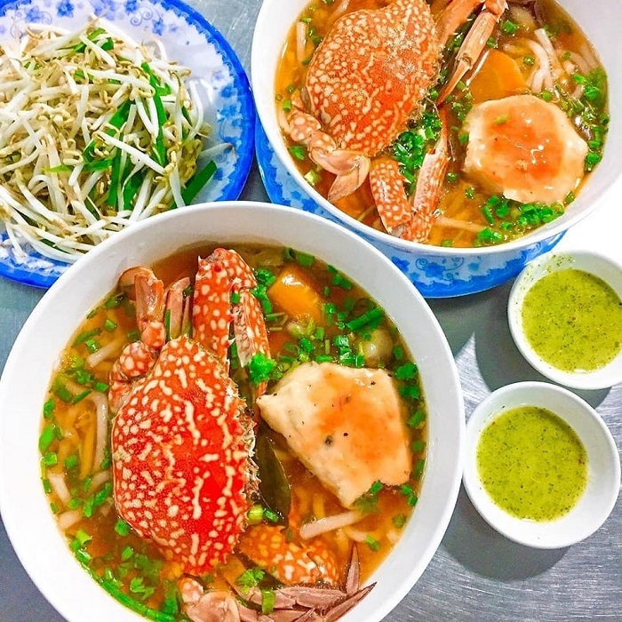
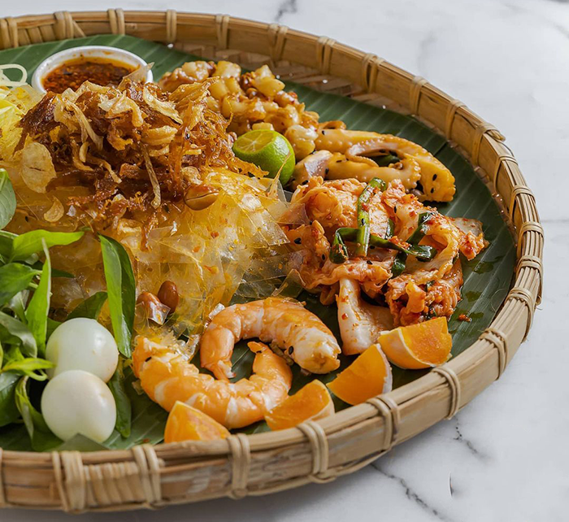

Ẩm thực Việt Nam vô cùng đa dạng, thể hiện nét đẹp văn hóa, phong tục tập quán được hình thành từ cuộc sống. Với chiều dài lịch sử lâu đời và vị trí địa lý khác biệt, đặc sản Việt Nam trên mỗi vùng miền có những đặc trưng riêng không thể hòa lẫn. Sự khác biệt tạo nên từ cách sử dụng nguyên liệu, chế biến, pha trộn gia vị và thói quen ăn uống của mỗi vùng miền. Nhưng tất cả vẫn có những điểm chung nhất định vì là món ăn của người Việt.
Sự đa dạng, phong phú với nhiều cách biến tấu từ đặc sản vùng miền, dân tộc khác Ít dầu mỡ trong nguyên liệu và cách chế biến Đậm đà hương vị với nhiều loại nước chấm và gia vị khác nhau Kết hợp nhiều chất, nhiều vị tạo sự cân bằng Tính ngon và lành tạo nên nét đặc trưng riêng Sử dụng đũa để gấp trong phần lớn các món ăn Tính cộng đồng thể hiện trong việc dùng chung bát nước chấm, tô canh,... Tính hiếu khách thể hiện qua thói quen mời cơm bạn bè, thân hữu,... Dọn thành mâm với nhiều món ăn trong một bữa
Về miền Nam, bạn đừng bỏ qua món bánh canh ghẹ Vũng Tàu bổ dưỡng, mang trọn hương vị thơm ngon, mát lành của biển cả. Bánh canh có sợi to với độ day mềm vừa phải, ghẹ chắc thịt, ngọt thanh, ăn cùng nước dùng thơm phức sền sệt. Món ăn được dùng khi nóng, kèm thêm rau thơm, hạt tiêu đậm vị sẽ khiến thực khách nhớ mãi không thôi.
Bánh tráng trộn là món ăn vặt khiến nhiều người mê mẩn và nghiện lúc nào không hay. Sợi bánh tráng dai mềm trộn cùng bò khô, khô gà, đậu phộng, xoài xanh, rau răm và nước sốt đậm đà.
Trên đây là 1 số món ăn đặc sản của các vùng miền tổ quốc.